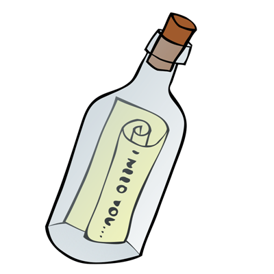

Lütfen birazcık bekle...
Başlıyoruz :)
Şişede senin için bi mektup var. Şimdi şişeye dokun..

Senin için içimden gelen bazı şeyleri söyledim,sevgilim..
Merak ediyor musun?
Tamam, peki. Sadece biraz heyecanlanmanı istemiştim..
İşte geliyor bebeğim...
glug
glug
glug
...